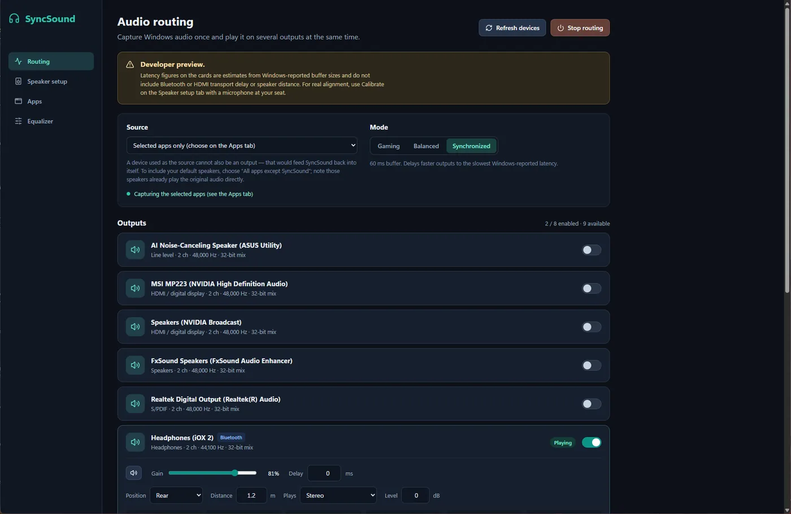
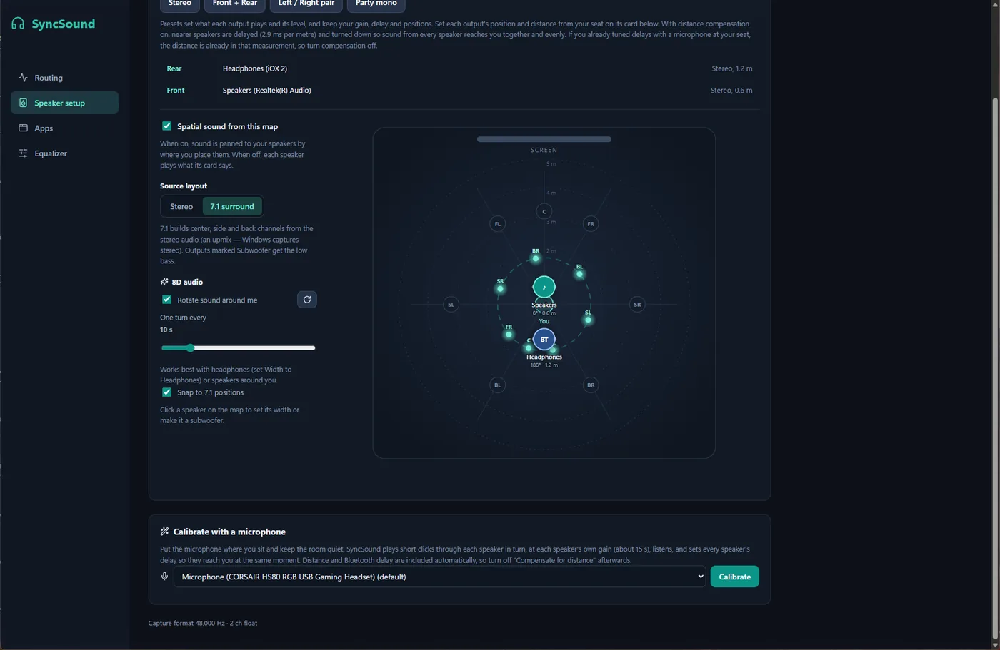
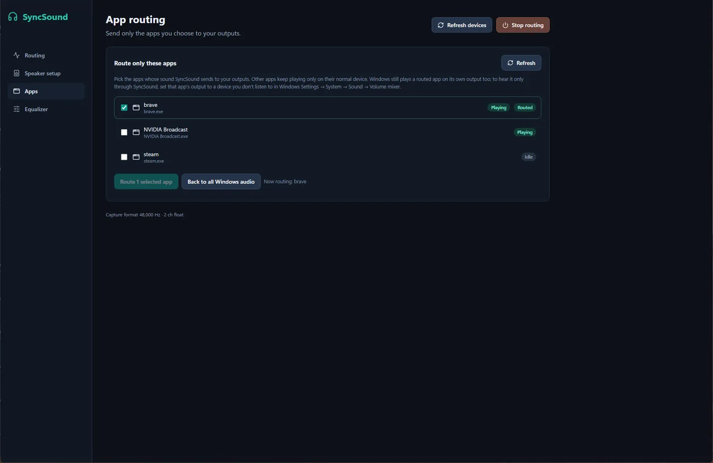
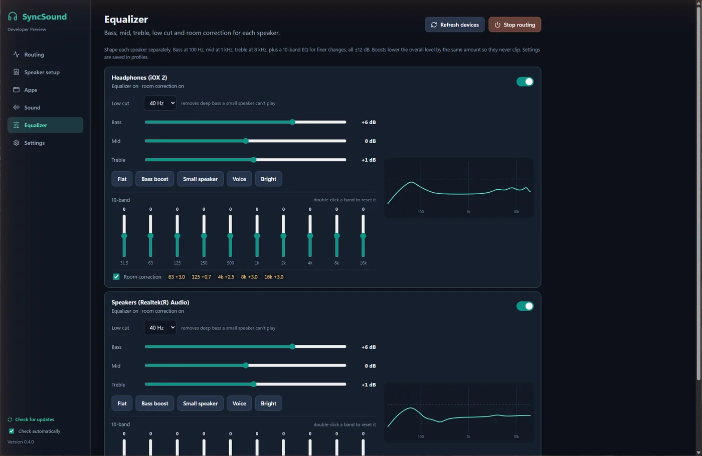

Up to eight outputs at once
Each output gets its own buffer, drift correction, volume, mute and delay. Gaming, Balanced and Synchronized modes trade latency for stability.

Free and open source for Windows 11
SyncSound plays your PC audio on wired, USB, HDMI and Bluetooth outputs at the same time. Your microphone measures how late each one is, and SyncSound lines them up so the room sounds like one system.

255ms
On our test desk a pair of Bluetooth headphones reached the ear 255 ms after the wired speaker. That's a clear echo on every word. Windows can only play one device at a time anyway, so a second speaker means a second app, and nothing keeps them together.
A simulation of what reaches your seat. Each bar is a beat. Press Calibrate to see what SyncSound does: it delays the faster speaker until both arrive together.
No extra hardware, no account, no cloud. Everything runs on your PC.
Each output gets its own buffer, drift correction, volume, mute and delay. Gaming, Balanced and Synchronized modes trade latency for stability.

A click track plays through each speaker in turn. Your mic hears when each one arrives and SyncSound sets the delays.
Drag speakers to where they really are. Stereo is panned to match, 7.1 is upmixed, and 8D moves the sound around you.
Send just Spotify or a game to the extra speakers while calls stay on your headset.

Bass, mid, treble and low cut for each output. Measure room plays a sweep and stores a gentle 10-band correction that mostly cuts booms.

Starts with Windows if you want, restores your last setup, and installs signed updates from GitHub by itself.
Download the installer and run it. SmartScreen may ask you to confirm while the code-signing certificate is pending.
Switch on the outputs you want on the Routing tab and press Start routing. Optional: add the free VB-CABLE so your default speaker can be delayed too.
Sit where you listen, pick your mic and press Calibrate delays. About ten seconds later every speaker lands together.
Something else? Open an issue.
The installer isn't Authenticode-signed yet, so SmartScreen doesn't know it. Choose More info, then Run anyway. Signing through SignPath Foundation is being set up; see the code signing policy. Updates are already signed with SyncSound's own key, and the app refuses any update that doesn't match it.
No. Without it, Windows plays your default device directly and SyncSound adds the others, delayed to match. With the free VB-CABLE as the default, SyncSound can delay every speaker, including the one Windows used to play. SyncSound restores your previous default when you turn it off or quit.
Any headphones or speakers Windows shows as a playback device. Bluetooth delay varies by model and codec, which is why SyncSound measures it with your microphone instead of guessing.
Yes. SyncSound is open source under the MIT licence. There's no account, no subscription and no ads.
Only the update check, which downloads a small file from GitHub Releases. You can turn it off in the app. Audio, settings and microphone recordings never leave your PC.